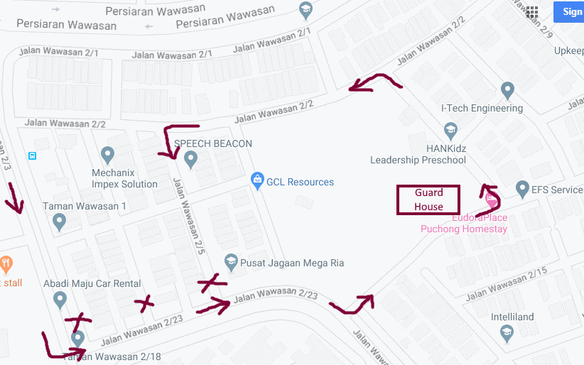
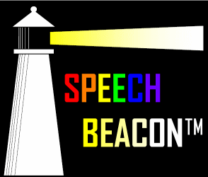

Our Speech Therapist
- more than 20 years of experience working with children with communication disorders
- Highly qualified professional (Master Degree)
- Hanen certified SLP
- Trained in PECS, PROMPT, Lidcombe, Talk Tools, TEACCH
- Acquired years of experience in various settings (EIP, Hospitals, Rehab, CDU) both in Malaysia & Singapore
- Fluent in English & Mandarin
- Able to conduct assessment & therapy sessions in English, Mandarin, Cantonese & Malay
- Parent of two young children himself
- Committed to speech language therapy progress in Malaysia
Our Services
We provide professional consultation, assessments and therapy services for children (0 to 12 years old) with:
- Articulation/Phonology Disorder
- Childhood Apraxia of Speech
- Stuttering
- Speech-Language Delay
- Specific Language Impairment
- Autism Spectrum Disorder (ASD)
- Global Developmental Delay
- Intellectual Disability
- Down’s Syndrome / Other Syndromes
We also offer specialized training program for parents to assist their child in home-based therapy using the world renowned Hanen™ Parent Training Programs (upon request):
- It Takes Two to Talk (for children with language delay)
- More Than Words (for children with ASD)
- Talkability (for verbal children with ASD)
Not forgetting the importance roles of early childhood educator/early interventionist in a child’s language learning, another Hanen training program specially designed for them- Learning Language and Loving It/Teachers Talk series are available too (upon request).
For further information on Hanen programs, kindly visit Hanen’s website: www.hanen.org

Please note the change of route due to security arrangements which WAZE or Google Maps may not notice.

Speech Beacon
No 29, Jalan Wawasan 2/5,
Taman Wawasan,
Pusat Bandar Puchong,
47160 Puchong, Selangor.
Tel:
018 2858384
Email:
info@speechbeacon.com